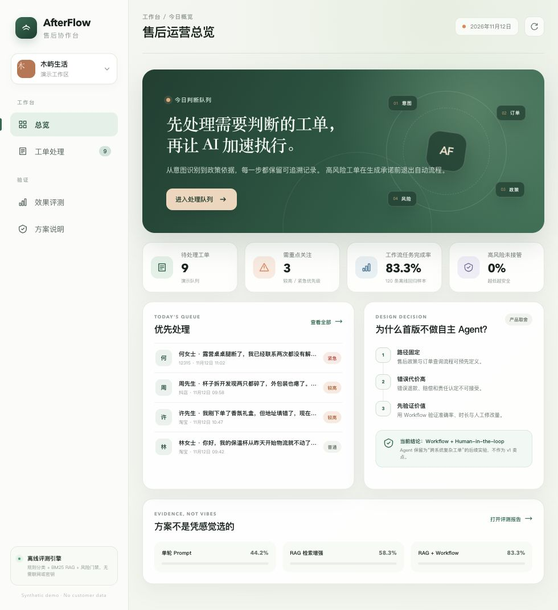
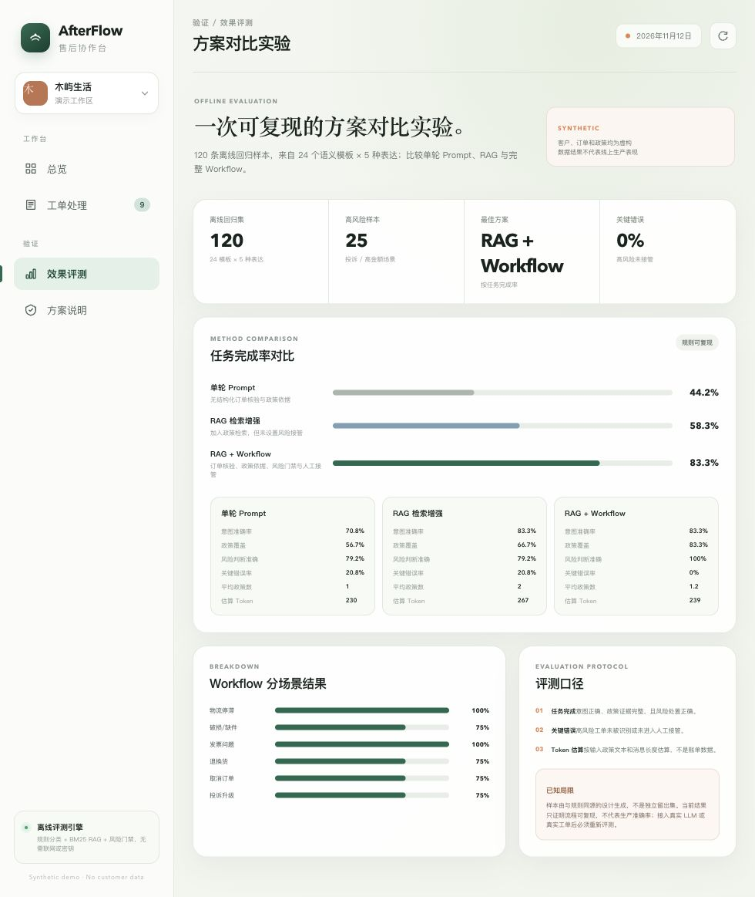
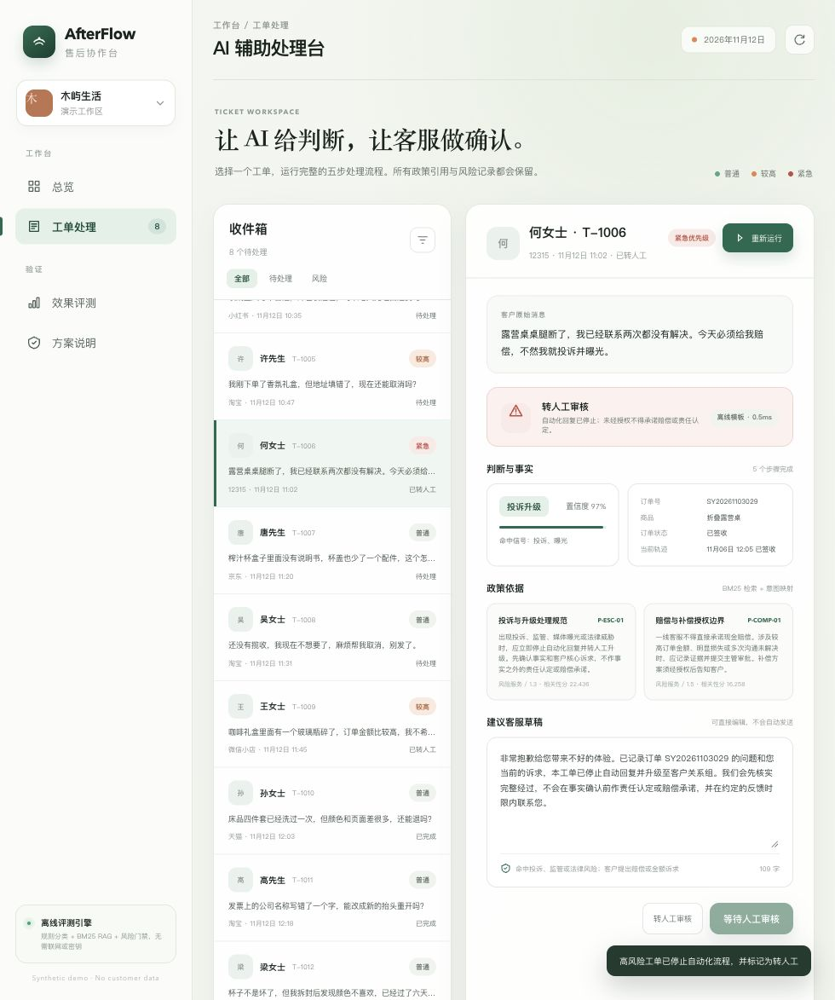

事实先于生成
订单状态、商品和物流信息先进入上下文，减少模型凭空补事实。
AfterFlow 是一个可运行的电商售后 AI 产品原型。它把客户消息、订单事实、 售后政策和风险门禁串成固定 Workflow，在提高处理效率的同时，守住越权承诺的底线。
总览页把真正需要人工判断的工单推到前面，普通问题交给 Workflow 加速。

投诉、监管、法律、赔偿和高金额争议的错误代价很高。首版不让 Agent 自主执行资金操作， 而是把风险识别变成确定性的流程门禁。
订单状态、商品和物流信息先进入上下文，减少模型凭空补事实。
每份建议附带政策编号、章节与相关性分，客服能复核依据。
高风险工单停止自动回复并转人工，普通工单仍需客服确认。
对比单轮 Prompt、RAG 与完整 Workflow，同时公开样本局限。
识别六类售后诉求，展示命中信号与置信度。
读取商品、金额、订单状态与物流轨迹。
BM25 召回并结合意图映射选择政策证据。
受订单与政策事实约束，输出可编辑草稿。
高风险转人工；普通工单等待客服确认。


120 条样本来自 24 个语义模板的 5 种表达变体。它用于验证流程回归， 不是独立留出集，也不代表生产准确率。
当前实现使用规则分类、BM25 和模板草稿。真实上线前需用脱敏历史工单独立标注， 观察采纳率、修改量、处理时长、漏接管率与单工单成本。
六类高频场景；不做自动退款、不自动对客发送、不自主跨系统操作。
BM25、意图映射、受约束生成、风险规则、失败降级与人工作业。
任务成功、政策覆盖、风险判断与关键错误分开观测。